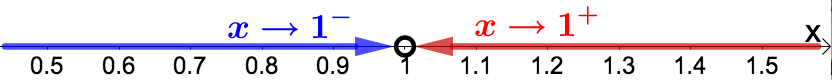
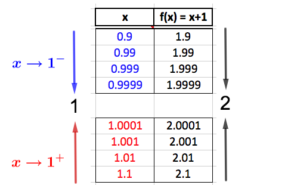
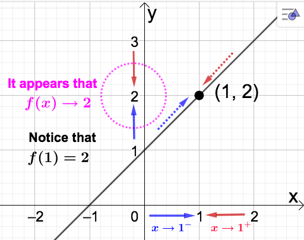
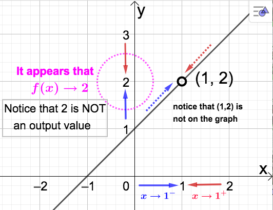
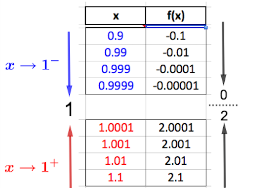
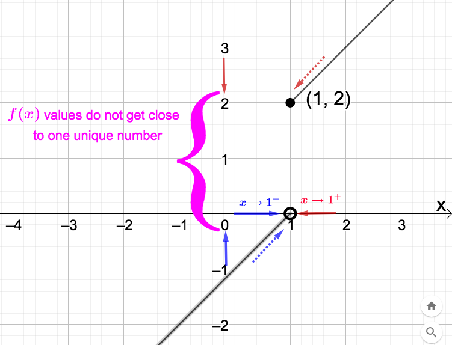

Section 3.1 Limits
For a function \(f(x)\text{,}\) we wish to investigate how the output values (or \(f(x)-\)values) change as the input values (or \(x-\)values) ``approach" some fixed number.
Notation: \(\longrightarrow\) is read “approaches (NOT equals).” For instance \(x \longrightarrow 1\) is read “\(x\) approaches 1, \(x \neq 1\text{.}\)” There are two directions to approach 1 on the number line (from the left and from the right), and the notation \(x \longrightarrow 1\) indicates that the two-sided approach is being considered. However, there is also notation to use if you only want to consider a one-sided approach.
- approach from the left; \(x \rightarrow 1, x \lt 1 \text{,}\) which is denoted \(x \rightarrow 1^{-}\)
- approach from the right; \(x \rightarrow 1, x \gt 1\text{,}\) which is denoted \(x \rightarrow 1^{+}\)
The minus and plus symbols, - and +, in the superscript DO NOT indicate the sign of the \(x-\)values. They simply indicate the direction of the approach. See the picture below.

Observe that \(\left[ x \rightarrow 1 \right]\) is the same as \(\left[ x \rightarrow 1^{-} \:
\textbf{AND} \: x \rightarrow 1^{+}\right]\)
In the next three examples (Example 3.1.1, Example 3.1.2, and Example 3.1.3) we will use data charts and graphs to investigate what happens to the given function as \(x \longrightarrow 1\)
First we look at a data chart:

Even though data charts only allow us to guess what will happen, it seems reasonable to conclude from the above table that \(f(x) \longrightarrow 2\) as \(x \longrightarrow 1\text{.}\) This is because the \(f(x)-\)values approach the SAME NUMBER (which is 2) as \(x\) approaches 1 from BOTH SIDES. Let's see if we can make the same conclusion looking at the graph.

Looking at the graph we come to same conclusion. As \(x \rightarrow 1\) from either side the corresponding points on the graph of \(f(x)\) move (indicated by the dotted arrows) towards the point \((1,2)\text{.}\) Looking at the \(y-\)axis (which is where we find the \(f(x)-\)values) we see that whether \(x\) approaches 1 from the left or right, \(f(x) \rightarrow 2\text{.}\) Note also that \(f(1)=2\) so we actually have \(f(x) \rightarrow f(1) = 2\) as \(x \rightarrow 1\text{.}\)
Example 3.1.2.
For homework make a data chart as in Example 3.1.1. You should again conclude that \(f(x) \longrightarrow 2\) as \(x \longrightarrow 1\)
Let's take a look at the graph. Notice that \(x=1\) is not in the domain of this function. So, we cannot evaluate \(f(1)\) as in the previous example. This also means there will not be a point on the graph above \(x=1\) on the graph of \(f\text{.}\) However, because \(x \rightarrow 1\) does not require evaluation at \(x=1\text{,}\) it still makes sense to talk about what happens as \(x\) approaches 1 since \(f(x)\) is defined for every \(x\) close to 1. Below is the graph.

Notice that our conclusion is the same as in the previous example. Also observe the similarities between the two graphs. This happens because
\begin{equation*}
f(x) = \dfrac{x^2 -1}{x-1} = \dfrac{(x -1)(x+1)}{x-1} \quad \stackrel{x \neq 1}{=} \quad x+1
\end{equation*}
In other words \(\dfrac{x^2 -1}{x-1} = x+1\) for every value of \(x\) except \(x=1\text{,}\) which is why both functions approach the same value as \(x \rightarrow 1\text{.}\) The difference this time is that \(f(1)\) is NOT defined. So, again we \(f(x) \rightarrow 2\) as \(x \rightarrow 1\text{,}\) but this time \(f(1)\) is UNDEFINED.
Example 3.1.3.
Let's again investigate what happens as \(x \longrightarrow 1\text{,}\) this time to the piecewise function
\begin{equation*}
f(x) = \left\{
\begin{array}{ll}
x-1, \qquad x \lt 1 \\ \\
x+1, \qquad x \geq 1
\end{array} \right.
\end{equation*}
Below is a data chart as in Example 3.1.1. Make sure you understand how the \(f(x)-\)values are calculated.

The issue here is that as \(x \longrightarrow 1\) the \(f(x)-\)values do not approach one unique number. For \(x\) near 1 (considering both sides of 1), the \(f(x)-\)values are separated by a distance of just over 2 units:
- as \(x \longrightarrow 1^- \text{,}\) the data shows that \(f(x) \longrightarrow 0\)
- as \(x \longrightarrow 1^+ \text{,}\) the data shows that \(f(x) \longrightarrow 2\)
Looking at the graph, we expect the two pieces of \(f\) to be separated along the vertical line \(x=1\text{.}\)

Definition 3.1.4.
Let \(c\) be a fixed real number. We say the limit of the function \(f(x)\) is the number \(L\) if all the \(f(x)-\)values can be made arbitrarily close to the number \(L\) by making \(x\) sufficiently close to \(c\text{.}\) We denote this by writing
\begin{equation*}
\lim_{x \rightarrow c}f(x) = L.
\end{equation*}
Recall that \(\left[ x \rightarrow c \right]\) is the same as \(\left[ x \rightarrow c^{-} \: \: \textbf{AND} \: \: x \rightarrow c^{+} \right]\text{.}\) Sometimes it is convenient to look at limits in which \(x\) approaches \(c\) from only one direction. These are called one-sided limit and are denoted
- \(\displaystyle \lim_{x \rightarrow c^-}f(x) \) for the left-sided limit and
- \(\displaystyle \lim_{x \rightarrow c^+}f(x) \) for the right-sided limit.
Facts:
- Limits of functions do not always exist. When they do, they are unique (in other words, a function cannot have more than one limit as \(x \longrightarrow c \)).
- \(\displaystyle \lim_{x \rightarrow c}f(x) = L\) if and only if \(\displaystyle \lim_{x \rightarrow c^-}f(x) = \displaystyle \lim_{x \rightarrow c^+}f(x) = L\text{.}\)
The second fact above is useful in determining the existence (or lack of existence) of limits for piecewise functions as in Example 3.1.3 above. It says that the two-sided limit exists if and only if both one-sided limits exist and equal the same number. If a limit does not exist we write \(\displaystyle \lim_{x \rightarrow c}f(x)\) DNE.
Returning to our examples we can express our findings as follows:
- \(\displaystyle \lim_{x \rightarrow 1}f(x) = 2\) (and recall \(f(1)\) was UNDEFINED) (Example 3.1.2)
- \(\displaystyle \lim_{x \rightarrow 1}f(x)\) DNE since \(0 = \displaystyle \lim_{x \rightarrow 1^-}f(x) \neq \displaystyle \lim_{x \rightarrow 1^+}f(x) = 2\) (and recall \(f(1) = 2\)) (Example 3.1.3)
For Example 3.1.3, the two-sided limit DNE because even though the one-sided limits both exist, they do not equal the same number. It also interesting to note that although \(\displaystyle \lim_{x \rightarrow 1}f(x)\) DNE in this example, we can still evaluate \(f\) at \(x=1\) to get \(f(1) = 2\text{,}\) while in Example 3.1.2 \(\displaystyle \lim_{x \rightarrow 1}f(x) = 2\) but \(f(1)\) was UNDEFINED. This highlights the difference between taking a limit and function evaluation. The function in Example 3.1.1 (in which \(\displaystyle \lim_{x \rightarrow 1}f(x) = f(1)\)) has a very nice property which allow us to calculate its limit using direct substitution.
Relying on numerical tables and graphs is a nice way to gain some insight as to whether a limit exists or not, and what that limit may be. A more dependable approach, however, is needed. For most of our applications we will be interested in the case when we can use direct substitution to obtain the limit; either immediately or after some algebraic reduction of the problem. The following properties of limits give us circumstances under which this is possible.
Algebraic Limits - Limit Laws
Let \(k\) be any real number, \(n\) a natural number, and suppose that \(\displaystyle \lim_{x \rightarrow c} f(x)\) and \(\displaystyle \lim_{x \rightarrow c} g(x)\) both exist for some constant \(c\text{.}\) Then ...
- \(\displaystyle \displaystyle \lim_{x \rightarrow c} k = k \)
- \(\displaystyle \displaystyle \lim_{x \rightarrow c} [f(x) \pm g(x)] = \lim_{x \rightarrow c} f(x) \pm \lim_{x \rightarrow c} g(x) \)
- \(\displaystyle \displaystyle \lim_{x \rightarrow c}[k f(x)] = k \lim_{x \rightarrow c} f(x) \)
- \(\displaystyle \displaystyle \lim_{x \rightarrow c}\left [f(x)g(x)\right] = \left(\lim_{x \rightarrow c} f(x)\right)\left( \lim_{x \rightarrow c} g(x)\right) \)
- \(\displaystyle \lim_{x \rightarrow c} \frac{f(x)}{g(x)} = \frac{ \displaystyle\lim_{x \rightarrow c} f(x)} {\displaystyle\lim_{x \rightarrow c} g(x)} \) provided that \(\displaystyle \lim_{x \rightarrow c} g(x) \neq 0 \)
- \(\displaystyle \displaystyle \lim_{x \rightarrow c}[ f(x)]^n = \left( \lim_{x \rightarrow c} f(x)\right)^n \)
- \(\displaystyle \lim_{x \rightarrow c}\sqrt[n]{f(x)} = \sqrt[n]{\displaystyle \lim_{x \rightarrow c}f(x)} \) (assume \(\sqrt[n]{\displaystyle \lim_{x \rightarrow c}f(x)}\) exists as a real number)
- \(\displaystyle \lim_{x \rightarrow c} x^n = c^n \) (direct substitution)
- \(\displaystyle \lim_{x \rightarrow c}\sqrt[n]{x} = \sqrt[n]{c} \) (direct substitution) (assume \(\sqrt[n]{c}\) exists as a real number)
Two important consequences of the above limit properties:
- If \(p(x)\) is any polynomial (Definition 2.5.1) and \(c\) is any real number then \(\displaystyle \lim_{x \rightarrow c} p(x) = p(c)\) (direct substitution).
- If \(r(x)\) is the quotient of two polynomials and \(c\) is in its domain then \(\displaystyle \lim_{x \rightarrow c} r(x) = r(c)\) (direct substitution).
Example 3.1.5.
-
\(\displaystyle \lim_{x \rightarrow 2}(x^2-4x+3) = 2^2 -4(2) +3 =-1 \)(Why could we use direct substitution to calculate this limit?)
-
\(\displaystyle \lim_{x \rightarrow 2}\dfrac{x^2-4x+3}{x-3} = \dfrac{2^2 -4(2) +3}{2-3} = 1 \)(Why could we use direct substitution to calculate this limit?)
-
\(\displaystyle \lim_{x \rightarrow 2}\sqrt{\dfrac{x^2-4x+3}{x-3}} =
\sqrt{\displaystyle \lim_{x \rightarrow 2}\dfrac{x^2-4x+3}{x-3}} = \sqrt{1} = 1 \)(What property above allowed us to calculate this limit so easily?)
-
\(\displaystyle \lim_{x \rightarrow 1}\dfrac{x^2-1}{x-1} \)Notice that direct substitution leads to division by 0, which is undefined. This, as we know, does not mean the limit DNE (we found this limit to be 2 - see Example 3.1.2). To calculate this limit algebraically, we have to do a little algebra first. Recall our work from above in which we found\begin{equation*} \dfrac{x^2 -1}{x-1} = \dfrac{(x -1)(x+1)}{x-1} \quad \stackrel{x \neq 1}{=} \quad x+1 \end{equation*}so that\begin{equation*} \lim_{x \rightarrow 1}\dfrac{x^2-1}{x-1} = \lim_{x \rightarrow 1}(x+1)= 1+1 = 2. \end{equation*}The idea with problems like this is to reduce the function to the point where you can use direct substitution to evaluate the limit.